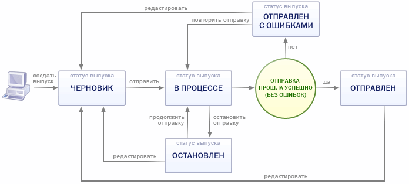

В этом разделе
Форма Список выпусков (Сервисы > Рассылки > Выпуски) предназначена для управления новостными сообщениями.
- в форме наглядной таблицы просматривать имеющиеся сообщения;
- создавать новостные сообщения (выпуски) с чистого листа и путём копирования существующих сообщений;
- редактировать сообщения;
- удалять сообщения;
- отправлять сообщения рассылки подписчикам.
Форма Список выпусков содержит две основные области: фильтр и список сообщений.
Фильтр
Задание параметров отбора отображаемых сообщений.
- идентификатор сообщения;
- диапазон дат, в пределах которых сообщение могло быть создано;
- статус;
- получатель;
- тема;
- другие критерии.
Поля фильтра.
| Поле | Описание |
|---|---|
| Найти | Поиск выпусков сообщений по их основным параметрам: идентификатору, теме или статусу. Поле присутствует, даже если фильтр свернут. |
| ID | Идентификатор сообщения, под которым оно зарегистрировано в базе данных. Поле допускает использование языка запросов для создания сложных условий. |
| Дата изменения | Диапазон дат, в пределах которых искомые сообщения могли быть изменены. |
| Дата отправки | Диапазон дат, в пределах которых искомые сообщения могли быть отправлены. |
| Время автоматической отправки | Выборка сообщений, отправляемых автоматически, по дате и времени их отправки.
Указываются Дата и время отправки сообщения, для которого в форме создания/редактирования было задано свойство Отправлять автоматически в указанное время. |
| Статус | Текущий статус сообщения в базе данных:
|
| От кого | Поле позволяет задать отправителей сообщений, сообщения от которых требуется найти. В качестве запроса можно использовать полный или частичный адрес e-mail. Возможно использование языка запросов для создания сложных условий. |
| Кому было отправлено | Задания получателей сообщений для поиска сообщения. В качестве запроса можно использовать полный или частичный адрес e-mail. Поле Кому заполняется после частичной или полной отправки сообщения. Возможно использование языка запросов для создания сложных условий. |
| Тема | Тема сообщений, которые требуется найти. Возможно использование языка запросов. |
| Тип сообщения | Позволяет отфильтровать только сообщения, созданные в HTML-формате либо в текстовом формате. |
| Сообщение | Предназначено для задания слов, частей слов, фраз или частей фраз, которые могут содержаться в искомых сообщениях. Возможно использование языка запросов для создания сложных условий поиска. |
Чтобы отфильтровать сообщения по заданным критериям поиска, нажмите кнопку Найти. Для отображения всех сообщений нажмите кнопку Отменить.
Контекстная панель
| Кнопка | Описание |
|---|---|
| Добавить | Служит для добавления нового выпуска. |
| Настроить | Переход к диалогу настройки внешнего вида отчетной формы. |
| Excel | Экспорт данных из отображаемой таблицы в формат MS Excel. |
Список сообщений
Таблица списка сообщений отображает выпуски рассылки, отбирая их согласно критериям, установленным в фильтре. Помимо этого, правая колонка таблицы списка (Действие) содержит ссылки-команды управления конкретным сообщением. При помощи этих команд сообщения могут быть отредактированы, отправлены и удалены.
Поля таблицы.
| Колонка | Описание |
|---|---|
| Колонка флажков | Выбор сообщений для применения какого-либо правила или действия. |
| Меню
действий |
|
| ID | Идентификатор сообщения, под которым оно зарегистрировано в базе данных. |
| Изменен | Дата и время модификации данного сообщения. |
| Тема | Тема сообщения. |
| Тип | Тип сообщения: текстовый или в формате HTML. |
| Статус | Статус сообщения и информация о ходе его отправки.
|
| Отправлено | Дата и время отправки сообщения. |
Как создать сообщение для рассылки
Для создания сообщения служит кнопка Добавить, открывающая форму добавления/редактирования сообщения.
Как отправить сообщение
Для отправки сообщения проще всего воспользоваться кнопкой Отправить формы добавления сообщения. Однако, после создания сообщения вы можете просто сохранить его в статусе Черновик, не отправляя. Отправить сообщение можно позднее, открыв меню нажатием на кнопку меню действий в таблице сообщений напротив соответствующего сообщения и выбрав пункт Отправить.
Диаграмма смены статусов сообщения
Логика смены статусов выпусков сообщений может быть описана с помощью следующей диаграммы:

Как найти сообщение
Для поиска конкретного сообщения, задайте его параметры в фильтре. Например, Вы желаете найти сообщение, тема которого звучала так: Представляем новый ноутбук. Введите название в поле Тема фильтра и нажмите кнопку Найти. Таблица сообщений отобразит требуемое сообщение.
| © «Битрикс», 2001-2008, «1C-Битрикс», 2008 | 1С-Битрикс: Управление сайтом |